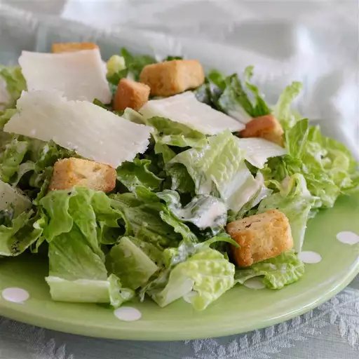

Caesar Salad
Go back

Description
Caesar salad is a popular and flavorful dish consisting of crisp romaine lettuce, crunchy croutons, and a tangy dressing made from lemon juice, olive oil, egg, Worcestershire sauce, anchovies, garlic, Dijon mustard, and Parmesan cheese. Often topped with additional Parmesan shavings and sometimes grilled chicken or shrimp, this salad is a staple in many restaurants and homes, known for its rich, savory taste and satisfying texture.
Ingredients
- 2 anchovy fillets
- 2 cloves garlic, chopped, or to taste
- 1 cup mayonnaise
- ⅓ cup grated Parmesan cheese
- ¼ cup half-and-half
- 2 tablespoons fresh lemon juice
- 1 tablespoon Dijon mustard
- 2 teaspoons Worcestershire sauce
Preparation
- Combine anchovy fillets with garlic in a food processor and pulse several times to form a paste.
- Process mayonnaise, Parmesan cheese, half-and-half, lemon juice, Dijon mustard, and Worcestershire sauce with anchovy mixture until dressing is creamy.
- Refrigerate for 1 hour or more before serving.